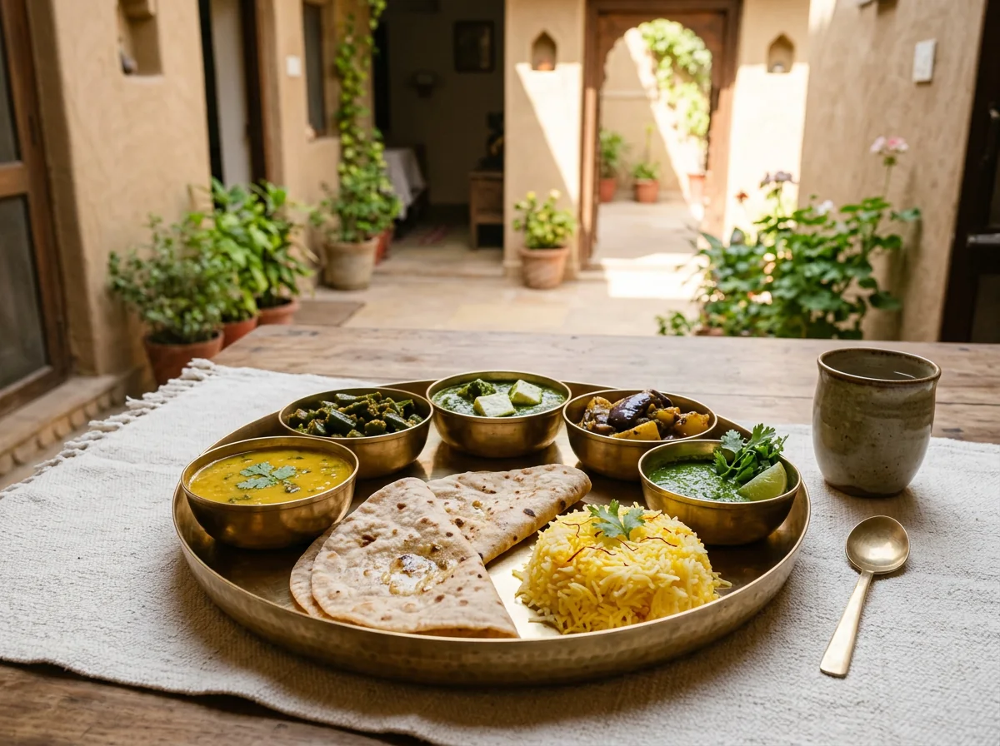

Dubki Wale Aloo
Slow-simmered potatoes, toasted spices, warm poori
THE AANGAN TABLE
Seasonal vegetarian cooking, family recipes and the easy pleasure of one more helping.
See what’s cooking
FRESH FROM OUR FAMILY KITCHENCOME HUNGRY, LEAVE HAPPY
Food at Aangan is not a performance. It’s what’s in season, what the family has always made and what feels right for the day. Jain meals can be arranged when we know in advance.
THE TABLE IS BETTER SHARED
Staying with us? Meals can be planned with your host, with Jain and other dietary needs discussed ahead of time.